.svg)
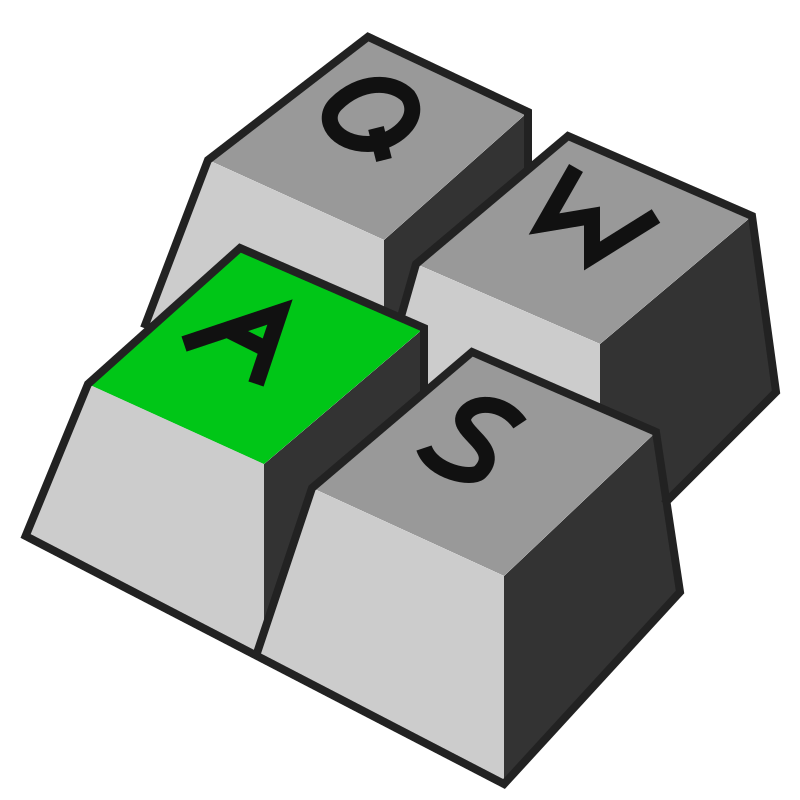

Techniques come and go,
but ideas last.
Debbie Lapeyre, eXtreme Markup Language 2005.
Thanks, Debbie, for the title!
My friend and I retired in 2023.
And now, we're traveling most of the time...
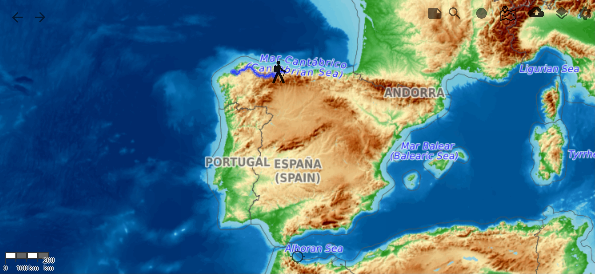
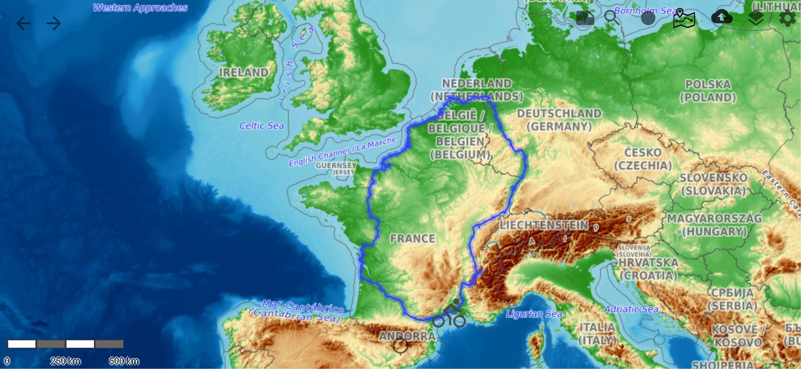
2023: 7 months away from home.
2024: 8 months away from home.
2025: 6 months away from home.
Staying in touch becomes a challenge.
And my 89-year-old mother does not have Internet access...
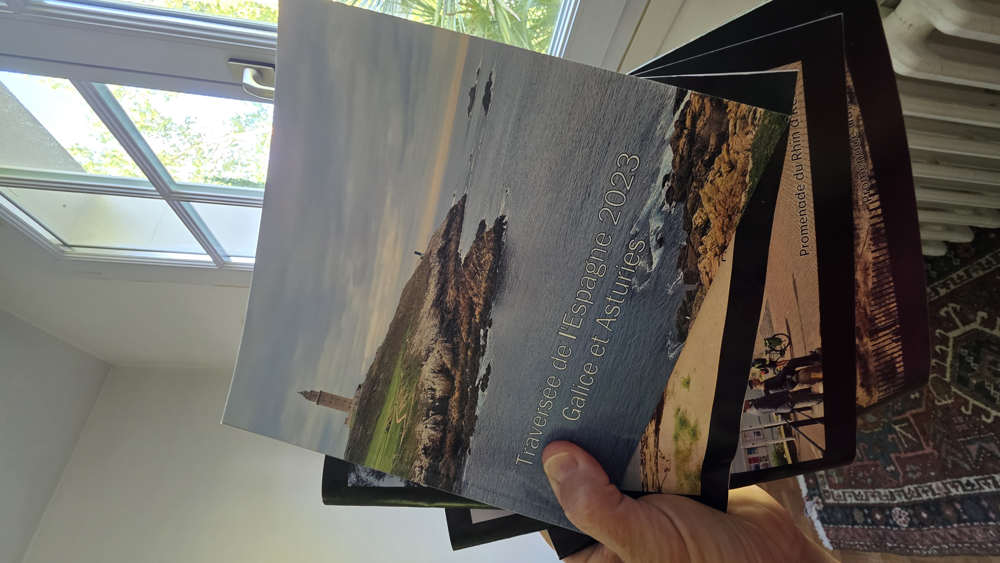
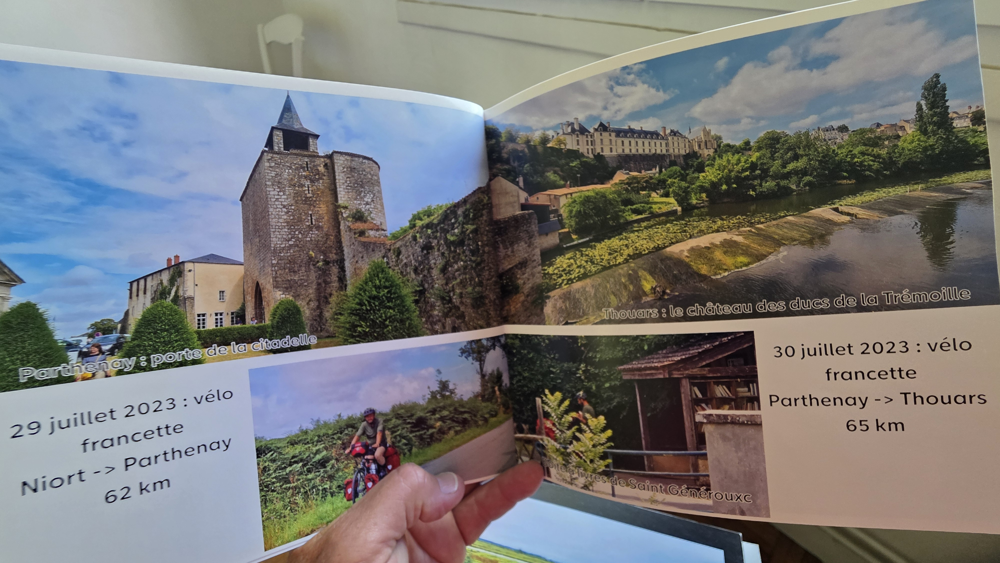
2023: manual monthly photo books, for my mother.
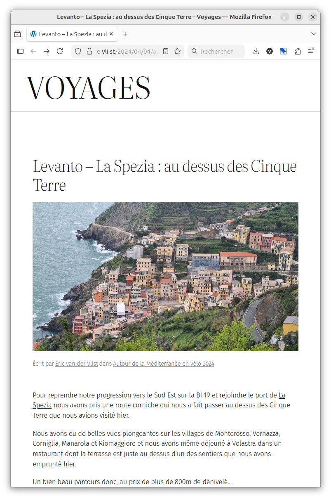
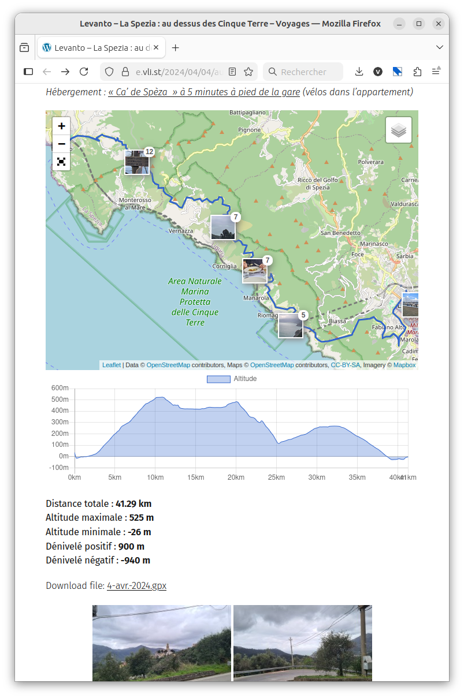
2024: WordPress travel blog with daily entries, for our friends.
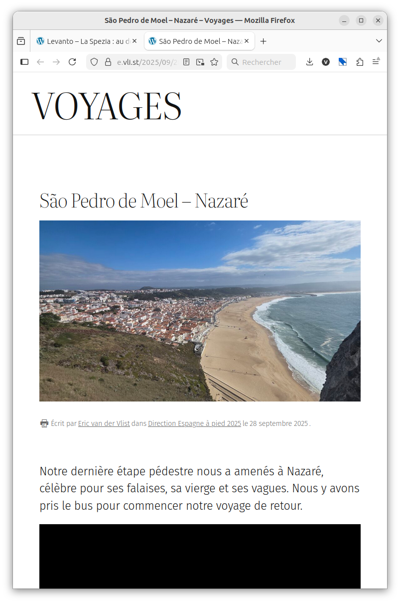
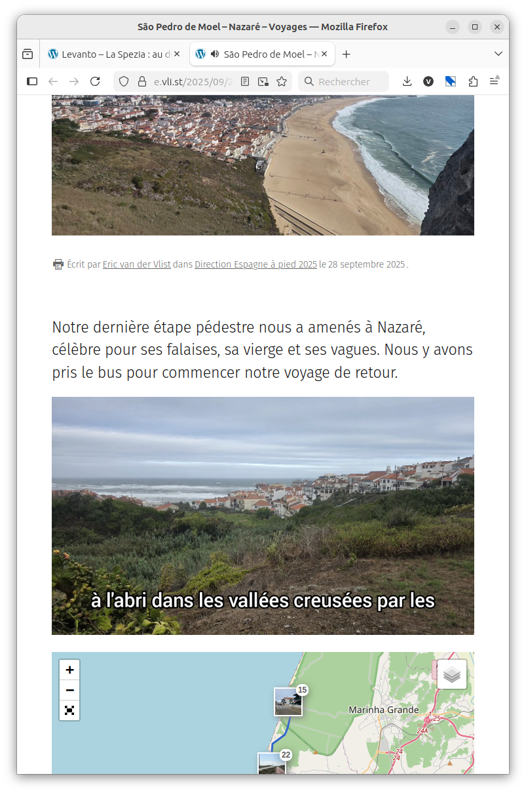
2025: printable blog with daily entries (and videos), for everyone!
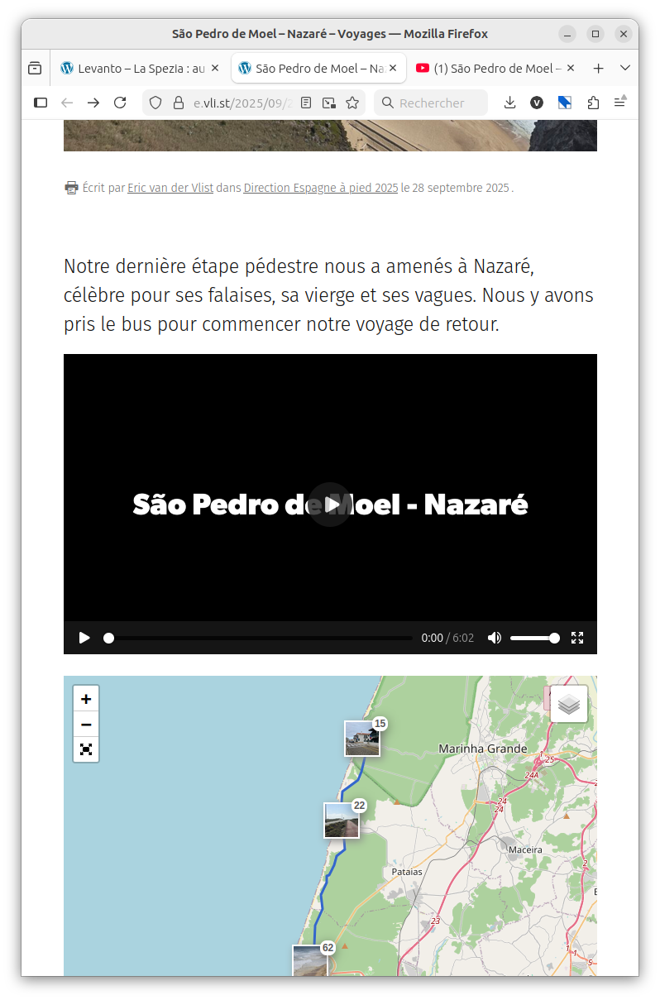
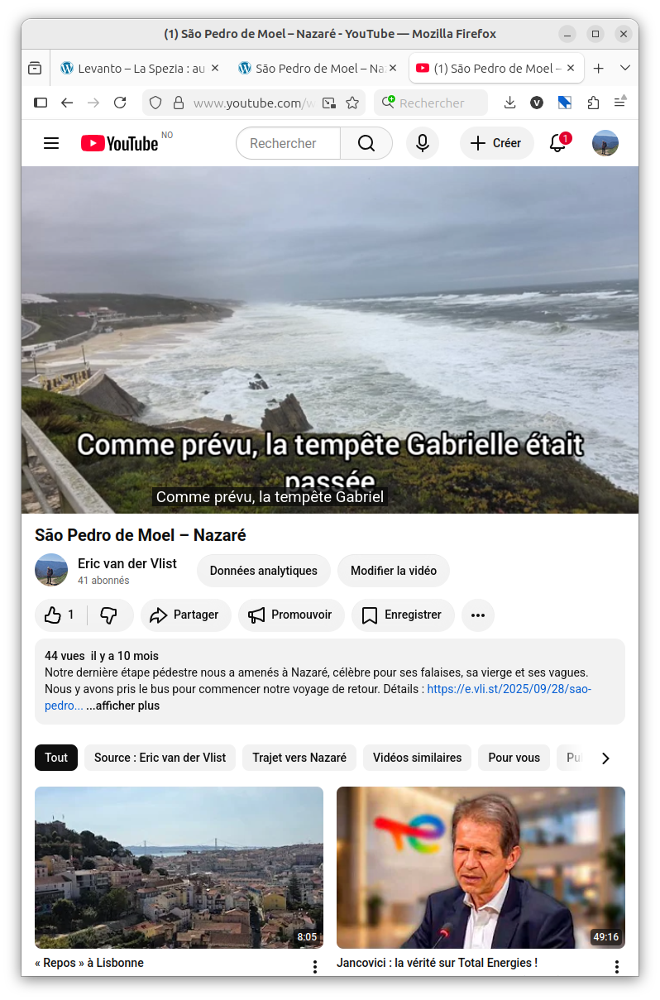
In 2025: WordPress videos exported to YouTube.
Same content, different audiences, different formats...
Rings a bell, doesn't it?
Michael Sperberg-McQueen, eXtreme Markup Language 2005.
(If you don't know me, I used to be a frequent speaker at eXtreme Markup Languages & Balisage conferences.)
Of course, we talked about that a lot.
WordPress serves HTML; I use CSS media queries for print.
CSS can't change the structure of the content.
That's why XSLT was invented.
There is no XSLT in WordPress, but...
In 2018, they introduced block (and page) templates.
Yes, "templates", like in <xsl:template/>.
WordPress templates are written in PHP and HTML.
They can be used to serve different presentations of the same content.
So I hacked WordPress: one template for web, one for print.
The server doesn't know if the client wants a print version.
I use a "?print" query string to tell the server.
A PHP hack selects a "-print" template when it sees "?print".
Different presentations are served for web and print.
Print pages become PDFs, then books.
Techniques come and go,
but ideas last.
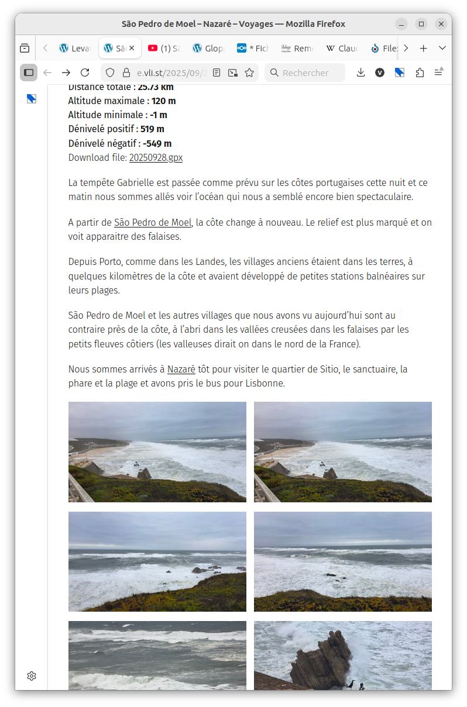
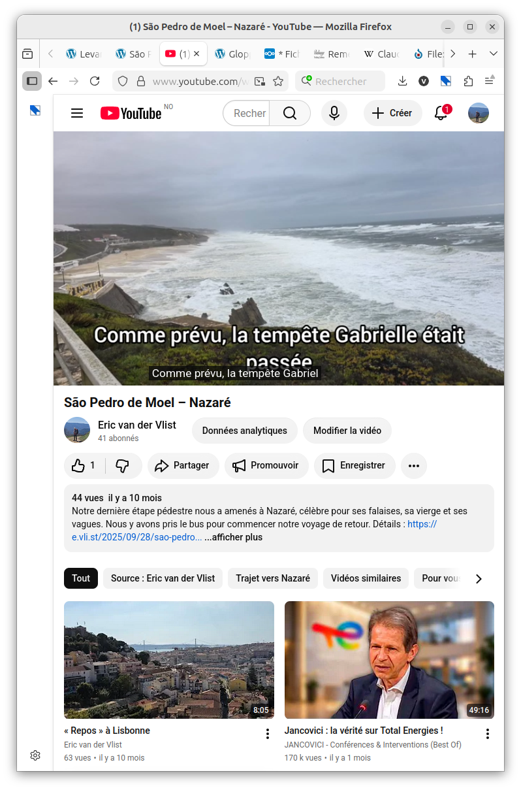
2025: Videos and posts share photos, but remain independent.
I first tried to feed Google Gemini with YouTube videos.
Gemini has a strong tendency to make everything overly positive.
But that worked rather well for several months.
Suddenly, Gemini told me it was impossible to do what it had been doing before.
I switched to Claude (Anthropic).
Claude can't read videos.
But it can process subtitles.
The result is closer to my style and mood.
Generates technical hiking guides (mainly from GPX tracks),
daily stories (mainly from video subtitles),
and additional educational sections (from specific prompts).
It outputs HTML I can paste into WordPress.
OK, AI generates content from subtitles and GPX tracks...
It could even target different audiences:
friends, relatives, the public...
Ideas last... More or less! Do our old patterns still hold?